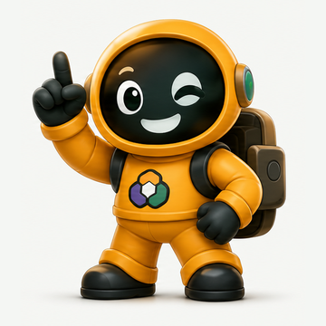
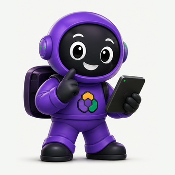
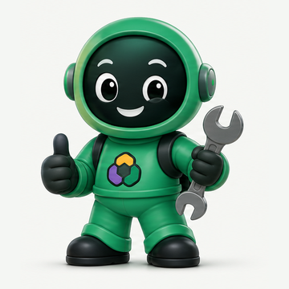

A trilha do seu agente
Uma receita por vez. Cada uma termina com algo funcionando de verdade, e a seguinte começa exatamente de onde a anterior parou.
FAÍSCA
Não pule etapas! A Receita 02 usa a pasta que você montou na 01, e assim por diante. 🧩